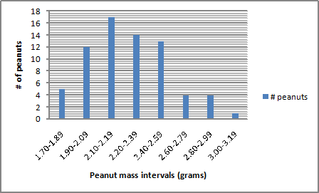

Are All M&Ms Created Equally?
(original by Judy Allard, NBCT, Vermont)
Day 1: In this exercise, you are going to use the statistical methods to answer this extremely important question! In addition, you will write up this lab in a "formal" lab report according to the protocol described in the Lab Report Requirements sheet.
Before you begin the exercise, develop a hypothesis related to the problem question at the beginning of this exercise. You will have to write a detailed, step-by-step procedure since the procedure included on this sheet is only a summary.
Summary of the Procedure:
Each student group will measure the mass of a sample of 10 M & M Peanuts of the same color (which have been dipped in milk chocolate and covered with a thin candy shell) to the nearest hundredth of a gram. [The first thing you are going to have to do is devised a method to take an unbiased, representative sample from the population of peanuts you have been given. This method should be included in your procedure.]
Express your results in a table. Calculate the mean, median, mode, variance, standard deviation from the mean (+/- 1 and +/- 2 deviations) and the standard error (see Statistic PPT) of the mean for your sample. At the conclusion of the activity, do the appropriate thing with your population!!!
Record the individual m&m masses on the SMARTboard. Express the masses of the peanuts of the class in a frequency distribution table *** and a frequency distribution graph***. These will include all peanuts without regard to color. (Teacher will demonstrate how to do mean, variance, stdev in Excel)
Class data will be mailed home. Using Excel, 0btain the mean and variance from three other student groups in the class who had different colored peanuts. Construct a table for this data that includes your own data. Apply the t test (see Statistics PPT) to compare each of these populations to your own. Be sure to include all the required elements of the t test. (This part of the lab report, also in the results section of your lab report, will be completed after you have received instruction on the t test.) Calculations may be written by hand.
Day 2: Design your own labs (work in lab groups)
Question: Working in your groups come up with one difference that can be measured between plain M&M's and Skittles using lab equipment available in the lab.... (standard lab equipment, balances, spectrophotometer, you are only limited by what we own and your imagination). (for example but not limited to: density, volume, light absorbence, solubility...)
Write up: (36 points)
1) Title (include the independent and dependent variables) 1 point
2) Results
2 data tables for day 1 and 2: (6 points) include a complete title, column heading with any units
remember to use only horizontal lines between column heading and end of raw data and statistics
a) your raw data with all statistics included: include the hand calculation of standard error of the mean below table (1 point)
b)Day 1: data table with other three "colors" with t-test values (if done by hand include handwritten values) 4 points
Day 2: your choice (your group picks the format)
c) Day 1: evaluation of t-tests (reject null or fail to reject); show calculation of degrees of freedom see Statistics PPT(6 points)
Day 2: your choice of statistical tests (at least 2 types) (2 points)
3) Day1: Graph of all raw data (you may combine into intervals) and generate a normal distribution histogram (4 points)***
Day 2: your choice of format (2 points)
4) (5 points) Your discussion should include possible explanations of the outcome of these activity based on the t-tests.
You can also discuss further areas of research (what would you consider the next step.
State a conclusion that refers to your hypothesis (language!!!)
5) (2 points) References cited (APA) should include the source of your statistical reference tables.
Hints on how to do the distribution graph:
1) paste all the masses in a
column
2) Under the "data" tab pick sort (descending)
that will put all the numbers in order
3) Look at the data and
pick intervals
Example:
Interval (g) # peanuts
Frequency
1.70-1.89
5
.07
1.90-2.09
12
.17
2.10-2.19
17
.24
2.20-2.39
14
.20
2.40-2.59
13
.18
2.60-2.79
4
.06
2.80-2.99
4
.06
3.00-3.19
1
.01
You can do more intervals or less
4) graph using the
"column" pick a vertical alignment
Example Graph....
